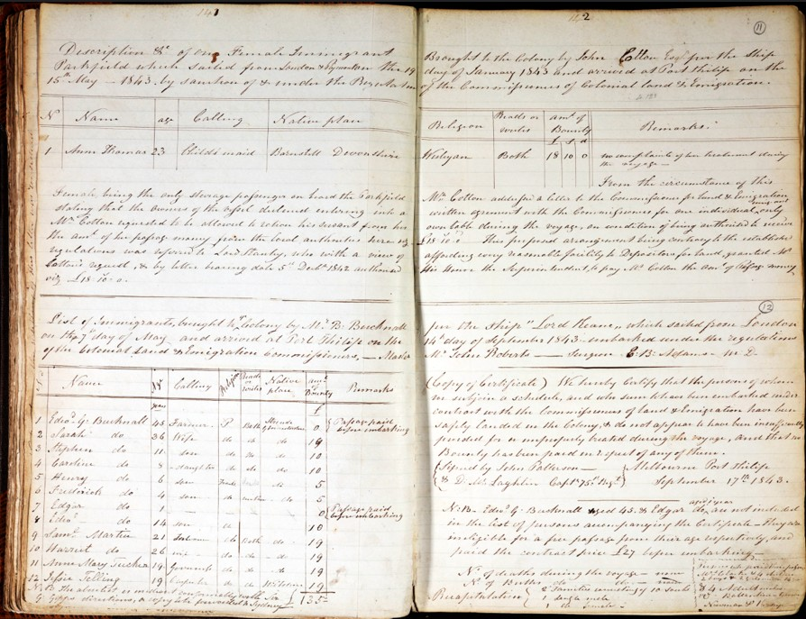
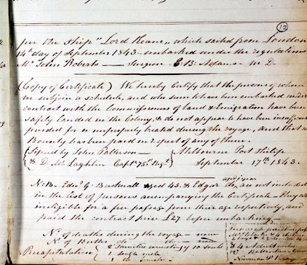

Port Phillip, September 1843
When the barque Lord Keane reached the colony, an official wrote down everyone aboard who had come to settle. The Bucknall household is here — Edward, Sarah, their children, and the family who travelled with them.
Sarah is entered in her own right, by name and age. It was the memorial, generations later, that reduced her to “his wife.”
I do not think you would do well by farming … you know nothing of farming.
Annie Wiseman had written exactly that, from Parramatta, before they sailed. On this page Edward is entered as a farmer. In England he was a jeweller. They went anyway.

The immigrant list
| № | Name | Age | Calling |
|---|---|---|---|
| 1 | Edwd G. Bucknall | 43 | Farmer |
| 2 | Sarah | 36 | — |
| 3 | Stephen | 11 | son |
| 4 | Caroline | 8 | daughter |
| 5 | Henry | 6 | son |
| 6 | Frederick | 4 | son |
| 7 | Edgar | 2 | son |
| 8 | Edward | 14 | son (eldest) |
| 9 | Saml Martin | 21 | labourer |
| 10 | Harriet Martin | 26 | — |
| 11 | Ann Mary Tucker | 14 | — |
In plain reading
The colony recorded the whole household on arrival: Edward Bucknall, 43, entered as a farmer, and — on the very next line, in her own right — Sarah, aged 36.
Their children follow: Stephen (11), Caroline (8), Henry (6), Frederick (4), Edgar (2), and Edward, the eldest, at 14 — two Edwards in one household, father and son.
Then the family who travelled with them: Samuel Martin (21), hired to teach the Bucknalls to farm, his wife Harriet (26), and Sarah's young sister, Mary Tucker (14). Generations later, the Bucknall and Martin lines would join in the author.

The certificate & the note
In plain reading
The Lord Keane sailed from London in 1843 under the emigration regulations, with John Roberts as surgeon.
The surgeon and master certify the standard things: that those on the schedule were embarked under contract with the Commissioners of Land & Emigration, landed safely, adequately provided for and properly treated, with no bounty paid. Signed at Melbourne, Port Phillip, 17 September 1843.
A marginal note records that Edward Bucknall — and, it seems, one of the children — were not carried on the assisted list, being ineligible by age, and paid the contract price of £27 before embarking. The family, it appears, paid their own way.
A note on this transcript
The immigrant list itself is clearly written and reads plainly. What is not yet settled sits in the ages of the younger children and one or two words of the certificate and the marginal note; these are marked with a dotted underline and await a high-resolution scan from the archive. The original is shown beside the transcript throughout, so any reading can be checked line for line.
Two Edwards. The household holds both Edward the father (43) and Edward the eldest son (14). It is the younger Edward whose place in the family the novel is careful with.
The farming question. This page should be read next to Annie Wiseman's letter of 1842, which warned the Bucknalls in plain terms not to go onto the land. Here Edward is entered as a farmer. The two documents, set side by side, hold the whole of the decision the book turns on.
Sarah, named. The point worth carrying away is small and complete: the colony wrote her name and her age on arrival. She was not erased by the record. That came later, and elsewhere.
Image reproduced from Public Record Office Victoria, VPRS 14/P0000, Book No. 2/3, page 53. This record is out of copyright; PROV does not object to its reproduction.